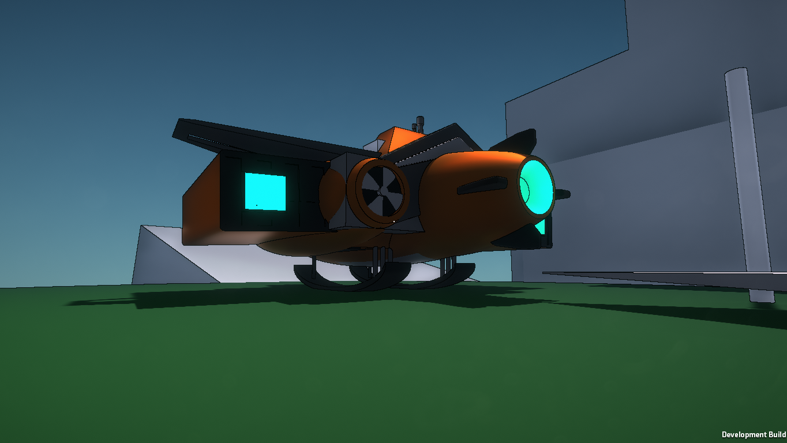
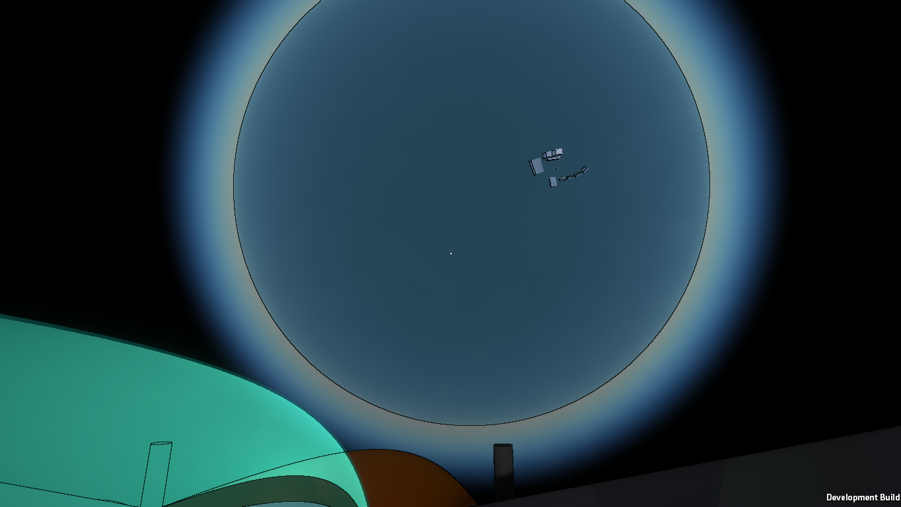
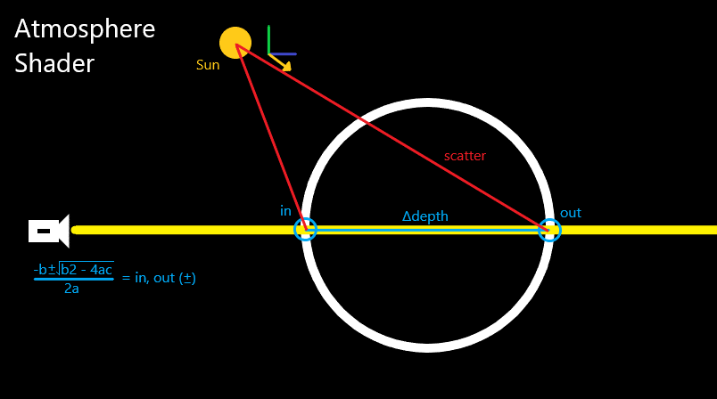
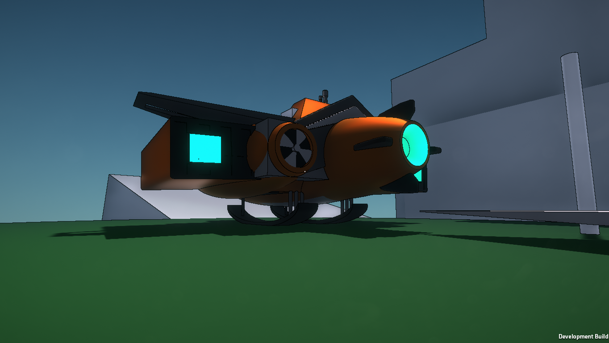
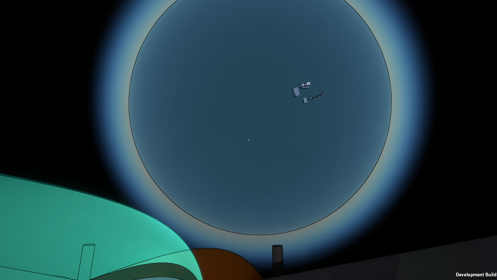
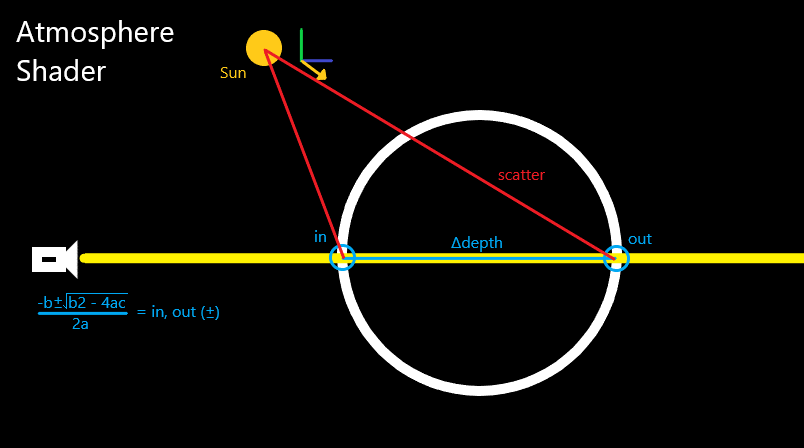

Frontier
This is the project made for my Computer Science project. It is still a work in progress at the moment, however progress is coming along steadily.
My target is to include procedural planet generation using the Marching Cubes algorithm to construct the mesh in chunks. This is not functional at the moment, however I'm making progress experimenting different methods.

The movement featured in the video is temporary also, as most of my efforts are being funnelled into developing the terrain generation algorithm of which there is not much to show for at the moment. Updates will be posted here as I make progress.
A development I'm very proud of is the Atmosphere shader made to surround the planets and literally add atmosphere to the environment and make planets appear very pretty from close and afar. It functions as expected, giving a blue sky within the planet, and blue spherical haze on the outside. The rotation of the atmosphere relative to the sun is also accounted to make natural lighting due to the atmosphere.
 
A problem I encountered was large floating point precision, and how the larger a float becomes, the less precise its decimal part becomes. I managed to solve this issue by making a seamless transition occur every 1000 units that translates the player back to 0,0,0 and translates everything else relative to that transformation.
My target is to include procedural planet generation using the Marching Cubes algorithm to construct the mesh in chunks. This is not functional at the moment, however I'm making progress experimenting different methods.

The movement featured in the video is temporary also, as most of my efforts are being funnelled into developing the terrain generation algorithm of which there is not much to show for at the moment. Updates will be posted here as I make progress.
A development I'm very proud of is the Atmosphere shader made to surround the planets and literally add atmosphere to the environment and make planets appear very pretty from close and afar. It functions as expected, giving a blue sky within the planet, and blue spherical haze on the outside. The rotation of the atmosphere relative to the sun is also accounted to make natural lighting due to the atmosphere.
 
A problem I encountered was large floating point precision, and how the larger a float becomes, the less precise its decimal part becomes. I managed to solve this issue by making a seamless transition occur every 1000 units that translates the player back to 0,0,0 and translates everything else relative to that transformation.